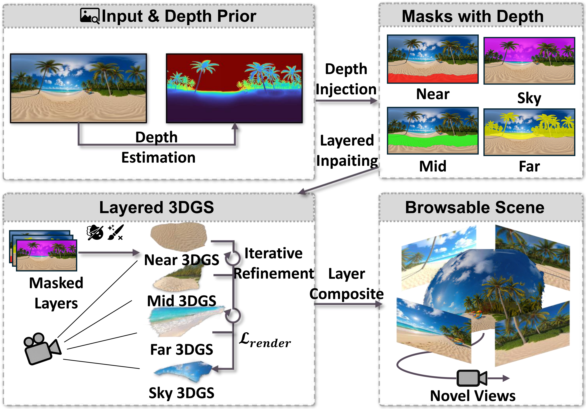
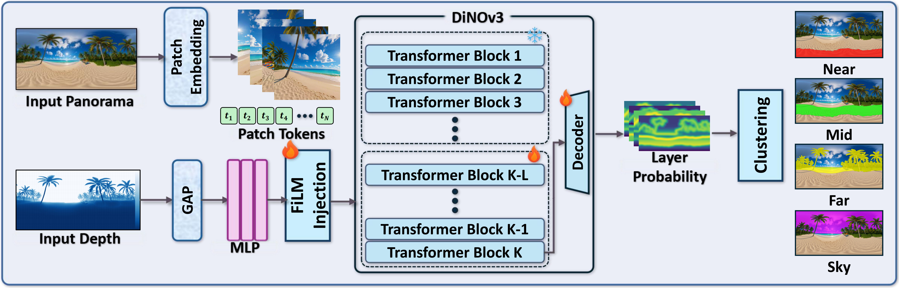
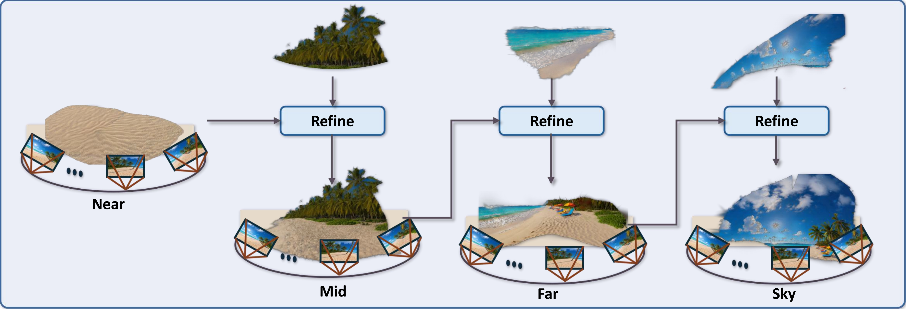
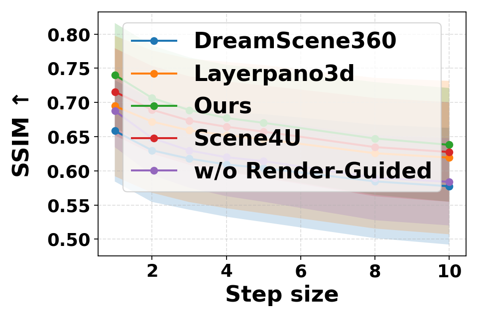
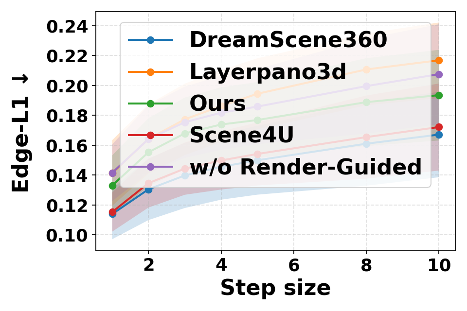
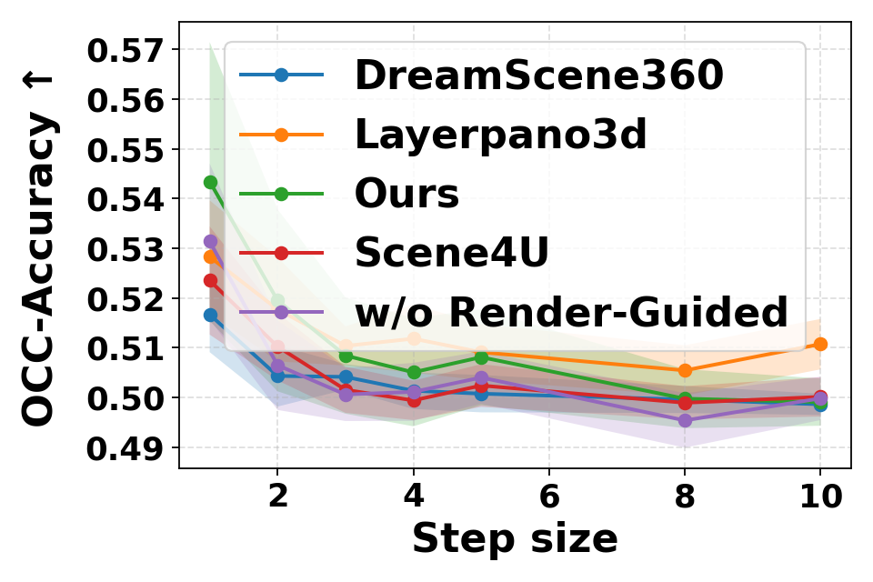
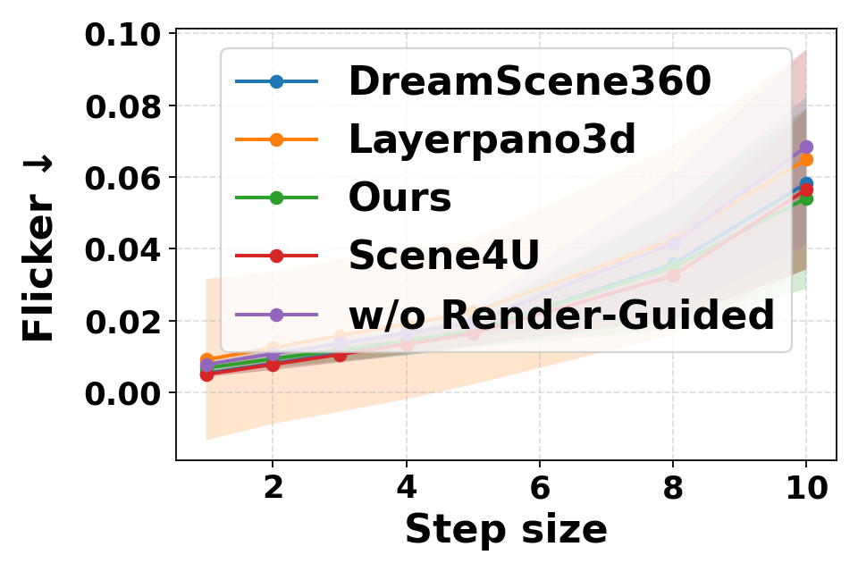

PanoGaussian: Depth-Aligned Layered 3D Gaussian Reconstruction from a Single Panorama
PanoGaussian studies a scoped but practical setting: reconstructing a coherent layered scene from one equirectangular panorama for nearby viewpoint browsing around the capture center, instead of claiming unrestricted single-view 6DoF generation.
Long camera-path rendering
Depth-conditioned segmentation
Layer-wise 3DGS
Render-guided refinement
Scene Scope
Built for coherent local browsing rather than generic single-image 3D.
Recovering a coherent layered 3D scene representation from a single equirectangular panorama is under-constrained: depth, occlusion, and unseen regions must all be inferred from one image, while ERP distortion and longitude seams complicate both learning and rendering. PanoGaussian addresses this with a layered 3D Gaussian pipeline that treats the task as reconstruction under nearby novel-view rendering, not unconstrained single-image 3D generation.
A calibrated panoramic depth prior is injected into a DINOv3 backbone through FiLM modulation to predict four ordered layers. Each layer is then completed and lifted into a separate Gaussian field. During refinement, earlier layers constrain later ones through masked photometric reconstruction, a lightweight depth-order term, and out-of-mask color preservation. Longitude wrapping and cosine latitude weighting are applied consistently to mitigate seam and polar artifacts.
Input
One ERP panorama with tangent-view depth calibration
Output
Four ordered Gaussian layers with fixed near-to-far compositing
Target
Nearby novel-view browsing around the capture center
Protocol
Shared 12-scene Upright360 evaluation split, same ERP inputs, same horizontal trajectory
Scoped Contribution Areas
- Depth-conditioned layering. FiLM-modulated inverse-depth cues guide a spherical-adapted DINOv3 backbone so layer boundaries align better with depth discontinuities than a semantic-only split.
- Cross-layer refinement. Later Gaussian layers are refined against earlier rendered layers using masked photometric reconstruction, depth ordering, and out-of-mask color preservation.
Longitude wrapping and cosine latitude weighting are also used throughout the pipeline as practical ERP-aware stabilizers. We treat them as implementation choices for seam continuity and polar bias reduction, not as standalone methodological novelties.
Evaluation Readout
Metrics combine no-reference naturalness, held-out target-view fidelity, and geometric stability. This keeps the page anchored to reconstruction behavior under the shared rendered trajectory instead of ranking methods only by one photogenic frame.
NIQE / BRISQUE
PSNR / SSIM / LPIPS
Pitch-Mean / Pitch-Var

Method Deck
Pipeline overview, mask prediction, and near-to-far refinement.

Depth-guided masks
A calibrated panoramic depth prior helps predict ordered near, mid, far, and sky masks.
Layer-wise lifting
Each ordered layer is reconstructed as an independent Gaussian field before composition.
Near-to-far refinement
Later layers are refined with rendered constraints from earlier layers to stabilize composition.
01

Depth-conditioned segmentation
A FiLM-conditioned DINOv3 backbone injects inverse-depth cues into the transformer so the predicted near, mid, far, and sky probabilities align with geometry instead of relying on semantic grouping alone.
02

Render-guided layer refinement
Layers are refined from near to far, with earlier rendered layers kept fixed to constrain visibility, preserve already-solved content, and reduce cross-layer leakage in the final composition.
Results
Quantitative and qualitative comparisons under the same Upright360 benchmark and camera path.
Shared 12-Scene Protocol Table
| Method | Naturalness | Target-view fidelity | Stability | ||||
|---|---|---|---|---|---|---|---|
| NIQE | BRISQUE | PSNR | SSIM | LPIPS | Pitch-Mean | Pitch-Var | |
| LayerPano3D | 6.324 | 61.931 | 17.405 | 0.788 | 0.298 | 2.159 | 1.733 |
| Scene4U | 5.041 | 52.259 | 17.484 | 0.793 | 0.267 | 2.855 | 2.311 |
| DreamScene360 | 7.352 | 71.148 | 10.187 | 0.691 | 0.414 | 3.442 | 2.374 |
| Ours | 4.961 | 46.096 | 20.196 | 0.863 | 0.160 | 0.684 | 0.102 |
Values are means over the shared 12-scene evaluation split. Lower is better for NIQE, BRISQUE, LPIPS, Pitch-Mean, and Pitch-Var. Higher is better for PSNR and SSIM.
17.445 -> 20.196
Relative to the mean of LayerPano3D and Scene4U, target-view PSNR improves by about 15.6%.
2.022 -> 0.102
Pitch-Var drops by more than 95%, indicating much more stable vertical geometry across rendered views.
0.267 -> 0.160
Compared with Scene4U, LPIPS improves clearly while PSNR and SSIM both increase.
Qualitative comparison
Multi-scene qualitative comparison under the shared local trajectory.
The comparison directly contrasts GT, LayerPano3D, Scene4U, DreamScene360, and our method on the same rendered views, exposing differences in structure retention, distant content, wall continuity, and artifact suppression.
- Sharper and more stable thin structures.
- Cleaner distant foliage and repeated textures.
- Fewer over-smoothed or floating regions than the compared methods.

Diagnostics and Limits
Cross-view behavior, ablation evidence, and the exact scope of the claimed setting.
Cross-view diagnostics




As the angular interval increases, our method degrades more gracefully across SSIM, Edge-L1, occlusion accuracy, and flicker than the compared reconstructions.
Compact ablation readout
| Variant | PSNR | SSIM | Pitch-Var |
|---|---|---|---|
| Ours | 20.196 | 0.863 | 0.102 |
| w/o RG | 18.366 | 0.805 | 0.895 |
| Sem-only | 13.045 | 0.769 | 1.930 |
Semantic-only layering is not enough
Removing depth conditioning drops PSNR from 20.196 to 13.045 and raises Pitch-Var from 0.102 to 1.930, indicating that geometric depth cues are central to the layer partition.
Render guidance stabilizes composition
Without render-guided refinement, independently optimized layers accumulate cross-layer errors, reducing PSNR to 18.366 and increasing Pitch-Var to 0.895.
Current limits remain explicit
The method uses a fixed four-layer decomposition, one-way refinement, and still depends on depth and completion priors. The target is nearby viewpoint browsing, not unrestricted large-motion 6DoF navigation.
Renderings
One trajectory, multiple reconstructions, very different behavior.
Scene 0
Ours
Layered reconstruction with render-guided refinement.
LayerPano3D
Layered baseline rendered with the same trajectory.
Scene4U
Shared benchmark split and identical view path.